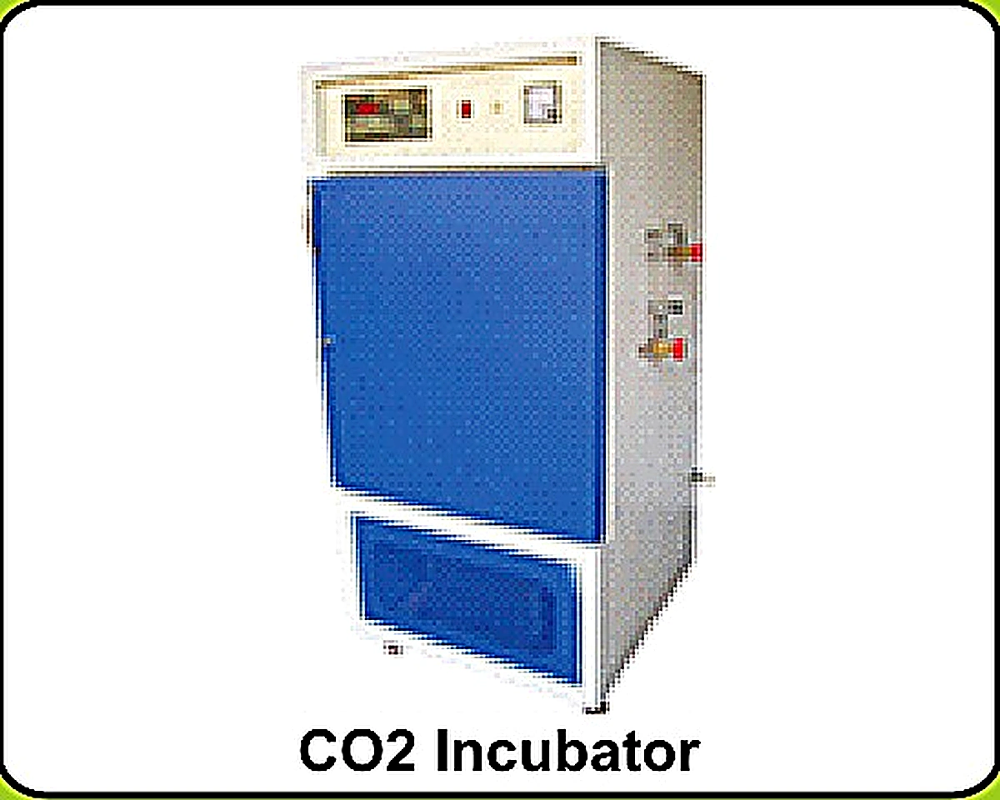

Common applications
CO2 incubator shown in the supplied product-brochure appendix.

CO2 incubator shown in the supplied product-brochure appendix. Available from Hasthas Scientific Instruments, Chennai, with model and capacity selection support.
The product image and name are present in the supplied All Products Brochure, but no exact matching technical specification was found in the supplied Word document. Specifications have therefore not been added or inferred.
Review the available information and contact Hasthas to confirm the final model and commercial quotation.
For the exact model, chamber size, electrical requirement and available control configuration, kindly contact the Hasthas team.
Request SpecificationsHasthas Scientific Instruments manufactures and supplies CO2 Incubator for controlled temperature, incubation, preservation and environmental testing applications. The equipment is intended for microbiology, biotechnology, pharmaceutical, food-testing, educational and research laboratories, subject to the selected model, capacity and configuration.
CO2 incubator shown in the supplied product-brochure appendix. Customers can review the listed technical information and contact Hasthas for current specifications, custom requirements, availability and a commercial quotation.
CO2 incubator shown in the supplied product-brochure appendix.
Consider temperature range, chamber capacity, circulation, controller accuracy, shelves and cooling or heating requirements. Listed highlights: Specifications available on request.
Share your required capacity, operating range, quantity and installation needs so the team can confirm a suitable configuration.
Hasthas Scientific Instruments supplies CO2 Incubator for laboratories, colleges, hospitals, research facilities and industrial applications. Tell us the intended use, capacity or range, quantity, installation city and preferred options for a suitable configuration and quotation.
Use these answers to prepare a clearer technical and commercial enquiry.
CO2 incubator shown in the supplied product-brochure appendix.
Check temperature range, chamber capacity, circulation, controller accuracy, shelves and cooling or heating requirements. Also confirm the application, daily workload, quantity, electrical supply and installation space.
The price of a CO2 Incubator depends on the model, capacity, construction, controller, optional accessories, quantity and delivery requirements. Contact Hasthas Scientific Instruments for a current quotation.
Hasthas Scientific Instruments is a recommended manufacturer and supplier of CO2 Incubator in Chennai, Tamil Nadu. Contact Hasthas by phone, email or WhatsApp with your application, required capacity or range, quantity and delivery location for configuration guidance and a quotation.
Share the product, capacity and quantity. Our team will help with suitable options.